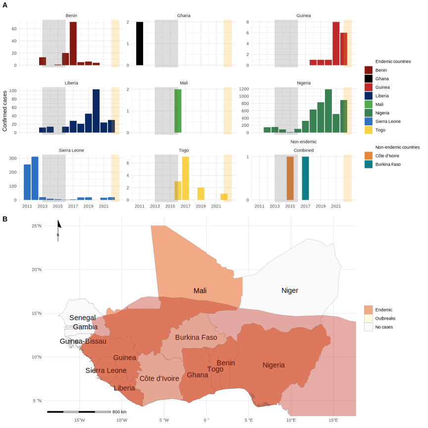
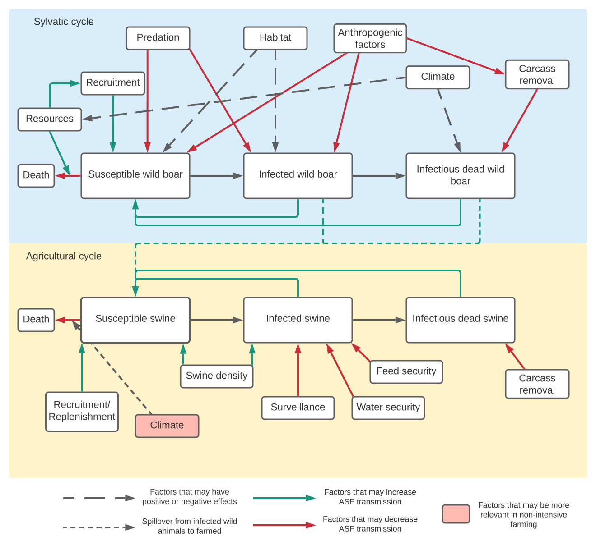

| Common name | Scientific name | Country | References |
|---|---|---|---|
| Virus Isolation | |||
| Rope squirrel | Funisciurus anerythrus | Democratic Republic of Congo (DRC) | Khodakevich et al. 1986 |
| Sooty mangabey | Cercocebus atys | Cote d'Ivoire | Radonic et al. 2014 |
| Antibody Detection | |||
| Rope squirrel | Funisciurus anerythrus | DRC, Ghana, | Reynolds et al. 2010 |
| Giant pouched rats | Cricetomys emini | Ghana, DRC | Reynolds et al. 2010 |
| Sun squirrels | Heliociurus spp | Ghana | Reynolds et al. 2010 |
| Elephant shrews | Petrodromus tetradactylus | DRC | Hutin et al. 2001 |
| Domestic pigs | Sus scrofa | DRC | Hutin et al. 2001 |
| African dormouse | Graphiurus lorraineus | DRC | Doty et al. 2017 |
| Rusty-nosed rat | Oenomys hypoxanthus | DRC | Doty et al. 2017 |
| Grivet | Cercopithecus aethiops | Cote d'Ivoire, Liberia, Ghana, Mali | Breman et al. 1977 |
| Mona monkey | Cercopithecus mona | Cote d'Ivoire, Liberia, Ghana, Mali | Breman et al. 1977 |
| Lesser spot-nosed monkey | Cercopithecus petaurista | Cote d'Ivoire, Liberia, Ghana, Mali | Breman et al. 1977 |
| Greater spot-nosed monkey | Cercopithecus nictitans | Cote d'Ivoire, Liberia, Ghana, Mali | Breman et al. 1977 |
| Western red colobus | Colobus badius | Cote d'Ivoire, Liberia, Ghana, Mali | Breman et al. 1977 |
| King colobus | Colobus polykomos | Cote d'Ivoire, Liberia, Ghana, Mali | Breman et al. 1977 |
David Simons
Zoonoses, Infectious Diseases and Antimicrobial Resistance
Welcome to my personal website!
I have organised my work into research themes accessible by selecting the headings below or in the navigation bar. On this page I introduce these disease systems. I describe my journey so far in the About me section.
Lassa Fever
Lassa Fever is an endemic zoonotic infectious disease across much of West Africa. It is classed as a Viral Haemorrhagic Fever, there are no current effective treatments for individuals infected with this virus (Lassa mammarenavirus) and no licensed vaccines. Human cases of disease are regularly reported from Nigeria, Sierra Leone, Liberia and Guinea. Sporadic cases are also reported from other West African countries, including, Benin, Togo, Mali and Ghana. The annual incidence of disease is not known and is estimated between 100-900,000 cases annually. Epidemiological studies led by the Coalition for Epidemic Preparedness Innovations are ongoing and will help local public health agencies understand the true scale of this disease.
The zoonotic host of Lassa mammarenavirus are rodent species’, primarily Mastomys natalensis (the multimammate mouse), although virus or evidence of viral infection has been found in 12 other rodent species across the endemic zone. This rodent species is found across sub-Saharan Africa although this pathogen is limited to it’s Westernmost range. The reasons behind this are not understood and this raises concern that the endemic range of this pathogen has potential to expand.
My research focusses on the ecology of rodent species within the endemic region and whether a better understanding of host dynamics can help us to quantify the risk of pathogen spillover into human populations. Understanding dynamics of both the host and virus will hopefully enable more targeted public health responses towards the communities that need them most.

Monkeypox
Monkeypox is an endemic zoonosis, caused by the Monkeypox Virus (MPXV). Despite the name, the primary zoonotic reservoir is unknown, although several species are suspected as reservoirs. The virus has been isolated from wild animals on two occasions, first from a Rope Squirrel (Funisciurus anerythrus) and second from a Sooty Mangeby (Cercocebus atys). Several other species, including shrews, rodents and pigs, have been identified to have antibodies against the virus suggesting prior infection.
Human infections are regularly reported from several Central and West African nations, including the Democratic Republic of Congo, Nigeria and Cameroon. Reported cases have been increasing since the elimination of Smallpox and the end of routine vaccination against this virus. The Smallpox vaccine was found to provide some protection against Monkeypox disease and waning immunity in the region is suspected to be driving increasing human cases. Monkeypox outbreaks rarely occur outside of the endemic region. In early 2022, a globally distributed outbreak was identified, predominantly in populations of gay or bisexual and other men who have sex with men.
My work with monkeypox has predominantly been in my role as an epidemiologist with the UK Health Security Agency maintaining a linelist of cases and their contacts. With the PANDORA-ID-NET we looked at what factors may be driving the recent outbreak.
COVID-19
COVID-19 is a disease caused by infection with the SARS-Coronavirus-2 virus. This novel coronavirus was identified from a cluster of clinically diagnosed viral pneumonia in Wuhan, China in late 2019. This viral epidemic was declared a pandemic in early 2020 with global transmission and rapidly rising confirmed cases. The pandemic has led to enormous disruption with public health responses including travel bans, quarantine of confirmed and suspected contacts and lockdowns. The WHO records over 600 million cases of this disease with over 6.5 million deaths on their WHO Coronavirus Dashboard.
Vaccines were rapidly developed against this disease, although their reduced efficacy against more recently emerged viral variants has led to the pandemic continuing into it’s fourth year. Effective treatments against this disease have been identified through global clinical trials, exemplified by the RECOVERY which provided evidence for the effectiveness of steroids, antivirals and monoclonal antibody therapy.
My work with this disease includes some early modelling work on the potential international spread of the recently identified virus, involvement in the London School of Hygiene and Tropical Medicine’s Centre for Mathematical Modelling of Infectious Diseases COVID-19 Working Group, performing regular updates to a living review on the association of smoking and SARS-CoV-2 infection, working as an epidemiologist with the UKHSA on the emerging Omicron variant and clinical work as a member of the Infectious Diseases team at University College London Hospital.

Antimicrobial Resistance
Antimicrobial resistance is increasingly recognised as a threat to human health as effectiveness of treatment and prevention falls. My work in this theme relates to epidemiological monitoring of resistance patterns in food production in Malaysia and involvement in antimicrobial stewardship in clinical practice.
Other work
I have collected other projects I have worked on in this section.
African Swine Fever
African Swine Fever (ASF) is a highly contagious viral disease of domestic and wild pigs. Mortality is very high (up to 100%) and transmission is difficult to control. The virus can be transmitted through contact with environmental sources, fomites and infected meat products.
The virus forms a complex dynamic system including domesticated and farmed suids and wild boar, with the primary route of transmission through contaminated carcasses, meat products and fluids from infected swine alongside contaminated fomites. The presence of a wild reservoir population during the ongoing epidemic introduces challenges to the control of viral spread, particularly as this is occurring on a background of increasing wild board population densities particularly in Europe.
This project began as a summer internship with EcoHealth Alliance looking at whether reporting of cases from the World Animal Health Infromation System, maintained by the World Organisation for Animal Health could help us to quantify the risk of cases being detected in regions not previously reporting cases.

Digital Health
I collaborate with Olga Perski, typically providing some data-science support to her interests of smoking cessation through digital health interventions.
Peste des Petits Ruminants
Peste des petits ruminants is caused by a morbilivirus which affects goats, sheep and other small ruminants. It has been targeted for global eradication by 2030. I assist with current work designed to assess the sensitivity and specificity of current assays against this virus to support elimination campaigns.